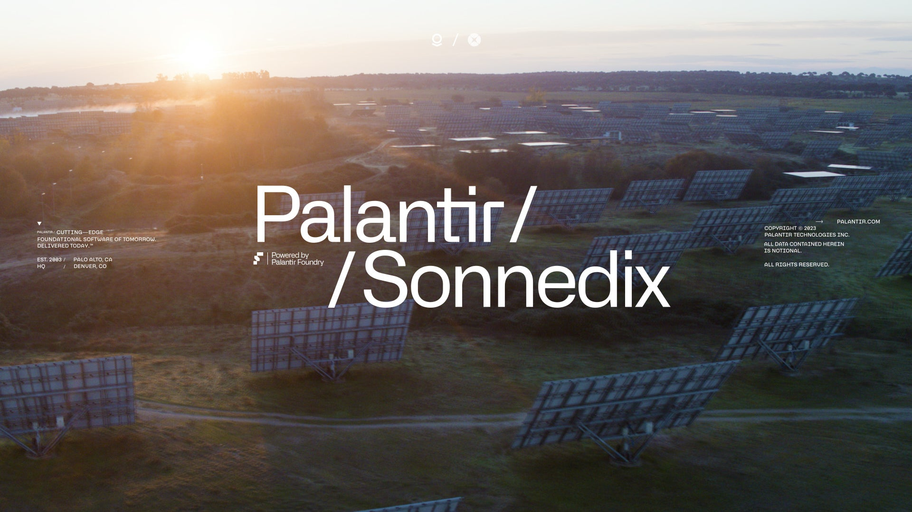
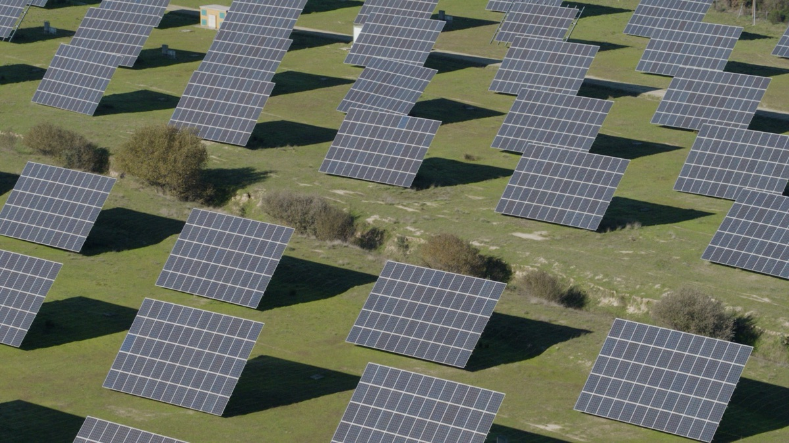
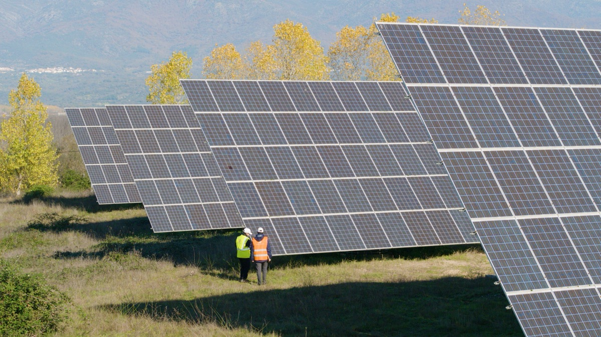
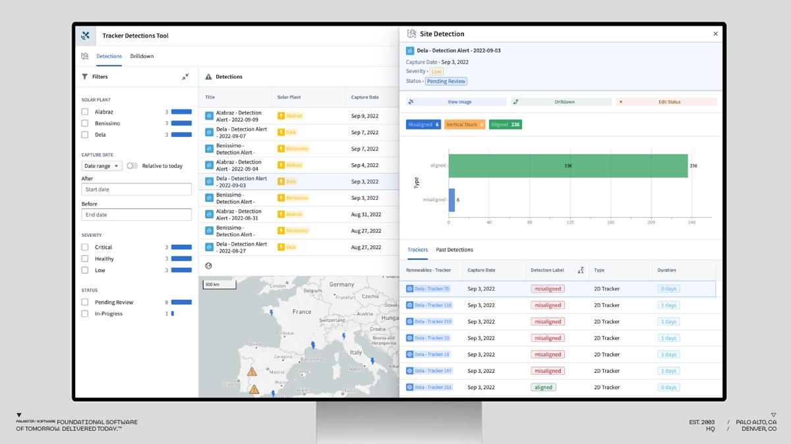
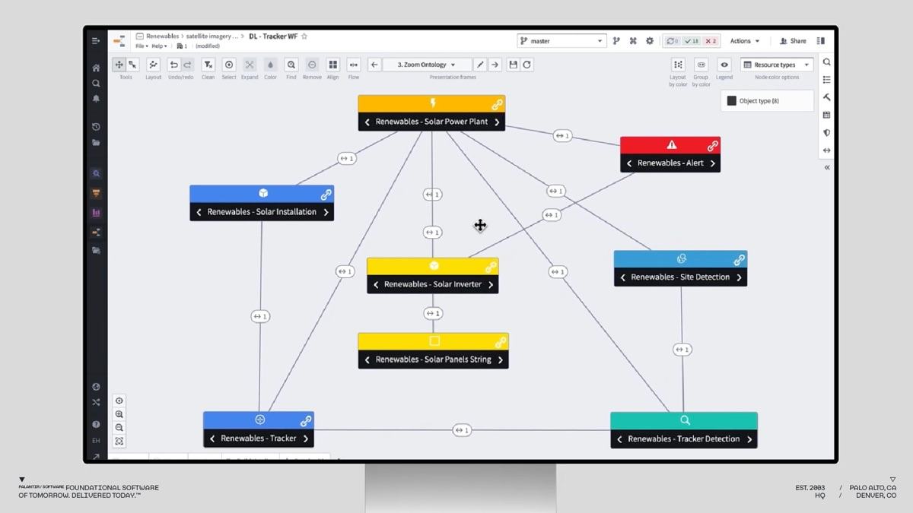
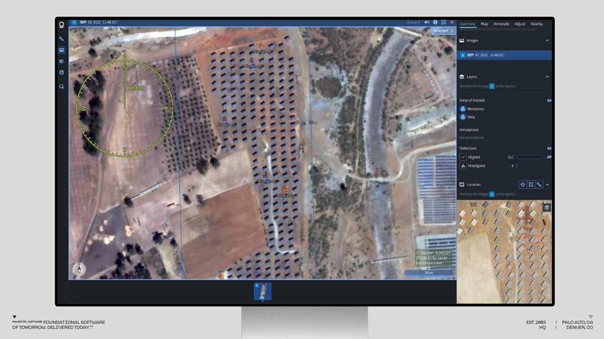
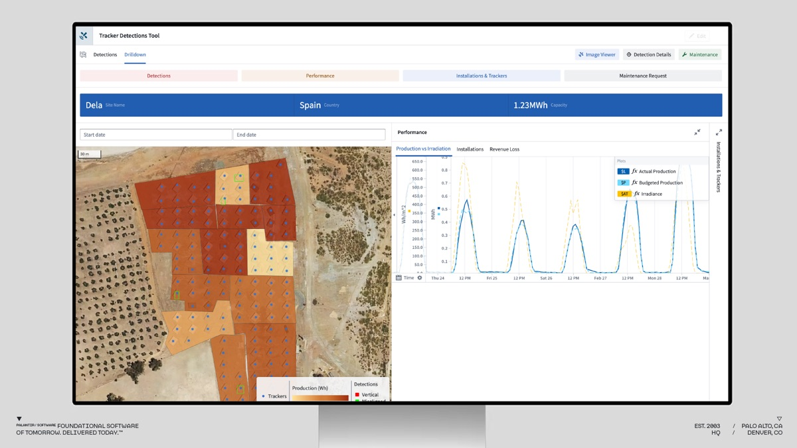

Sonnedix + Palantir
Powering the global energy transition with computer vision models

Generating Real-World Impact with Data and Models

Global Renewable Energy Producer Sonnedix has deployed Palantir Foundry at their Sonnedix Talayuela solar plant in Spain — and several other solar energy sites — to radically digitize production processes and reduce plant downtime.
Impact:
100% remote monitoring of solar trackers
Immediate notification of solar trackers in need of maintenance
Severely reduced idle time between identification of a tracker issue and resolution by needed repairs — as a result of computer vision models
Expectation to reduce revenue losses associated to tracker failures by at least 20%
Expectation to reduce mechanical failures due to trackers being stuck in a vertical position to 0
Reduced carbon emissions
Responding Faster and Smarter with AI-Driven Operations
Monitoring and understanding plant performance is an extremely difficult task, often requiring on-the-ground teams to physically inspect equipment and validate assumptions made by remote operators analysing dashboards. This is often due to a lack of remote sensing capabilities and connected view into performance data.
Sonnedix is using the Foundry Ontology — hydrated with sensor and SCADA feeds, as well as Computer Vision malfunction detections — to digitally represent its real-world assets in real time and more fully understand production patterns.
With the ability to integrate commercial satellite imagery of their facilities via Palantir's MetaConstellation software, asset managers can remotely monitor solar fields and immediately detect and respond to solar trackers in need of maintenance.

Solar Tracker Alignment Case Study
Asset Management Dashboard

Sonnedix solar tracker panels rotate to match the direction of the sun in order to maximize production levels. Misaligned or vertically stuck trackers can lead to downtimes, underperformance, or severe damages and revenue losses if left unattended for too long. Using Foundry, Sonnedix built a solution to optimize asset management and production performance.
All data presented herein is notional.
Building in Foundry

Sonnedix uses Foundry to integrate satellite imagery, weather data, production timeseries data, and models into a common data foundation — the Ontology. The Foundry Ontology breaks down complex energy ecosystems into intuitive objects, relationships, and actions — enabling users to monitor sites in real time, run what-if scenarios, and leverage AI/ML capabilities to anticipate maintenance before critical outages.
MetaConstellation Computer Vision Model

MetaConstellation enables Sonnedix to harness the power of satellite constellations to enhance decision-making. Utilizing commercial satellite imagery, Sonnedix can monitor sites remotely and receive alerts when trackers are misaligned, allowing operations and maintenance supervisors to prioritize their repairs. Computer vision models built on top of the imagery data derive further insights for users, like relative performance of different trackers and maintenance needs.
Taking Action and Writeback

With a digital representation of the assets in Foundry, as well as various data streams (e.g., weather patterns, energy markets, and existing maintenance), asset managers can drill down into site-specific detection details and action maintenance requests directly from the platform. Actions are captured at the object level and written back to the Ontology, fueling continuous learning over time.
As the world transitions to renewable energy sources, our goal is to implement Foundry to all facets of the company so our teams can rely on real-time data and fully integrated tools to make critical business decisions around producing clean energy.
For detailed whitepapers on the following topics, please request access using the form below:
Foundry for Renewables
SCADA connections/sensor data
Foundry overview
Security
Contact Us
Please see our Privacy Policy regarding how we handle this information.